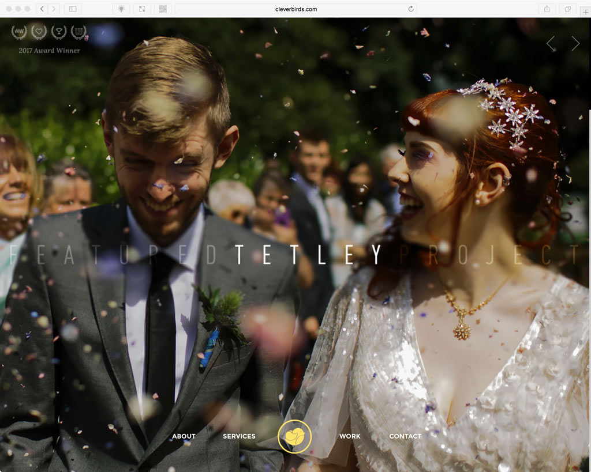
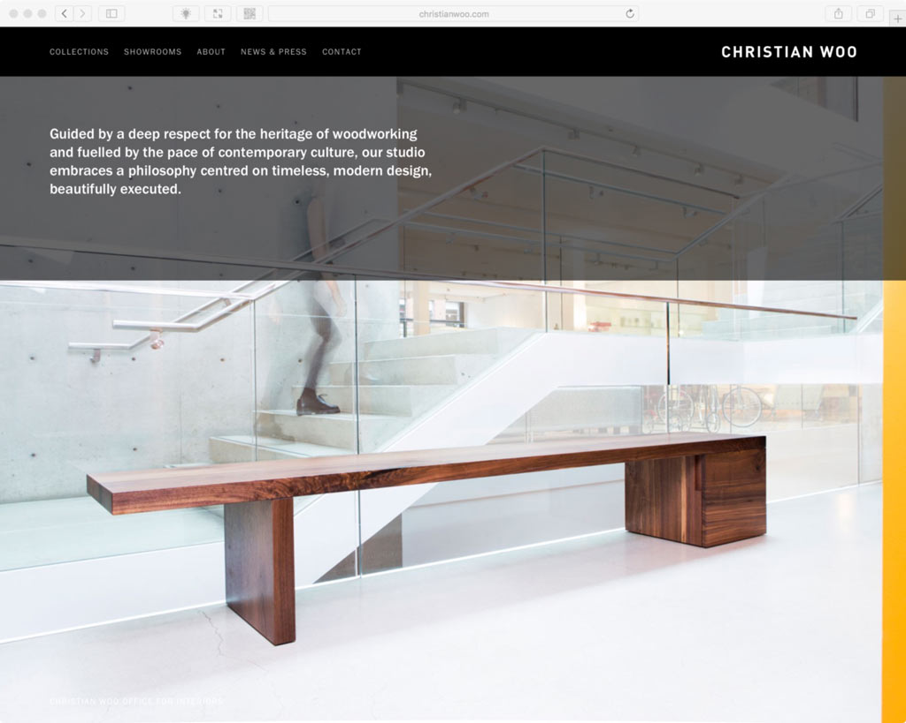

S09: Working With Images
Designers love to use big hero images when designing a website. I’m not going to debate the merits of the use of hero images—or any images for that matter—in a web page design. Images certainly have their place, but they can also cause big problems for the site’s visitor if not done correctly.


In this series of screencasts, I demonstrate how to use HTML and CSS to embed images in your web pages. This includes the use of vector images! More importantly however, I cover the Art Direction—the identification of breakpoints—of photographic images for different screen sizes. Remember the following from our in-class discussion?
Another content type easy to identify breakpoints for are images. When you crop an image suitable for a wide screen you can’t assume it still works when scaled to fit within a skinnier screen width. A good example of this is an image of President Barack Obama being sworn in. A wider version lets the viewer see Justice Kennedy, and President Obama with his family looking on. On a skinny screen the image is scaled to fit and the content breaks making it hard to see details of President Obama, the original intent of the image. This is where a breakpoint can be inserted that art directs the image to be cropped into President Obama and Michelle Obama to retain detail. Another breakpoint can be added to adjust the design to further crop into President Obama.


Finally, I cover performance issues such as what happens if an images takes too long to load and how to optimize your images for performance.
Read Before Starting
- Do not upload the “assets” folder that contains the high resolution .jpg files to your class web hosting account! This could cause you to get an error when visiting your hosting account that says something to the effect of “Over Storage Limit”.
Part 01 of 07
Part 02 of 07
Part 03 of 07
Part 04 of 07
Part 05 of 07
Part 06 of 07
Part 07 of 07
Grading
Learning Objectives Applied
- Understanding
- Demonstrate HTML5 and its contextual, semantic purpose, and classify the markup content.
- Demonstrate CSS’s use for content presentation by illustrating its effects on typography, imagery, and layout.
Assessment Rubric
- If you received 27–40 points you successfully…
- Used the
<img>to include images optimized in Photoshop in your index.html document. - Created a section with a resizable background image that fills the entire screen.
- Created a section with an image embedded with the
<picture>. - Embedded SVG icons with the
<img>tag. - Embedded SVG icons with the
<svg>tag and styled them with CSS.
- Used the
- If you received 1–26 points you did not successfully do one or more of the following…
- Used the
<img>to include images optimized in Photoshop in your index.html document. - Created a section with a resizable background image that fills the entire screen.
- Created a section with an image embedded with the
<picture>. - Embedded SVG icons with the
<img>tag. - Embedded SVG icons with the
<svg>tag and styled them with CSS.
- Used the
- If you received between 0 points you did not complete the assignment.